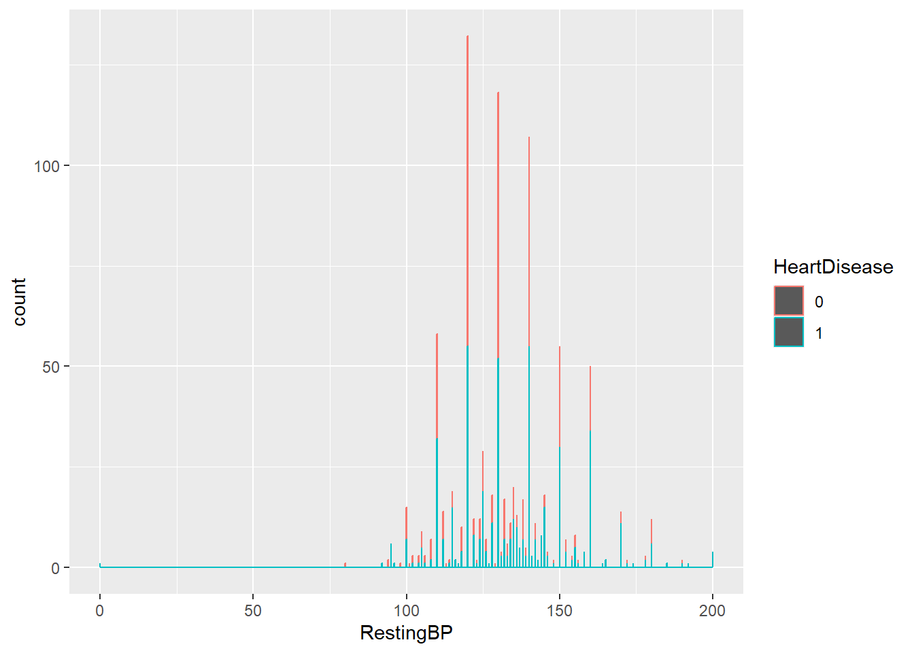
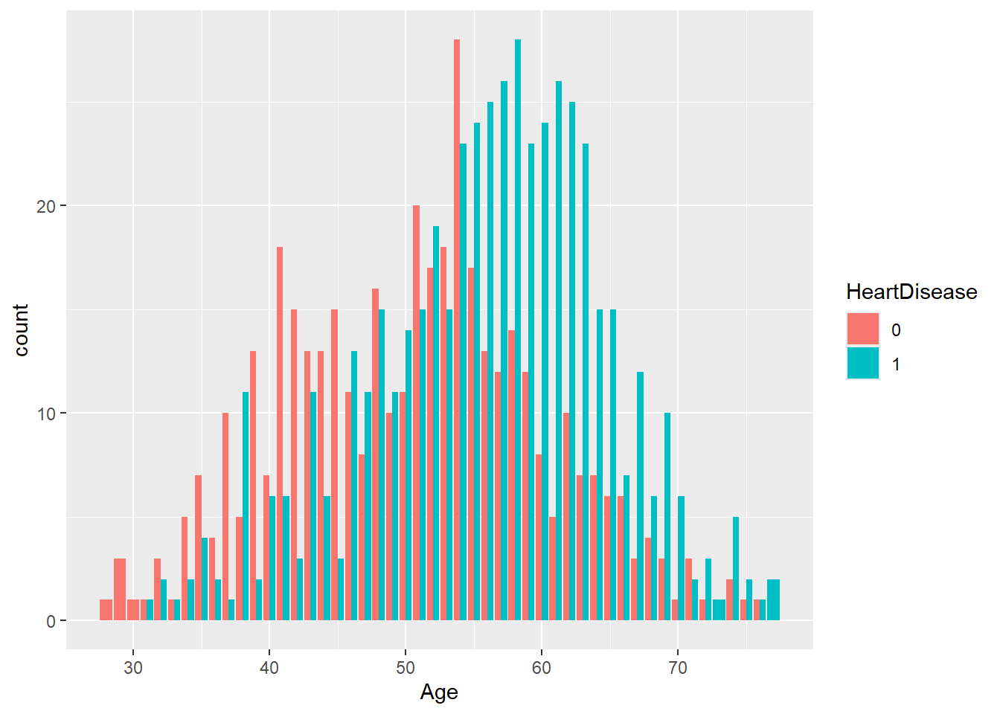
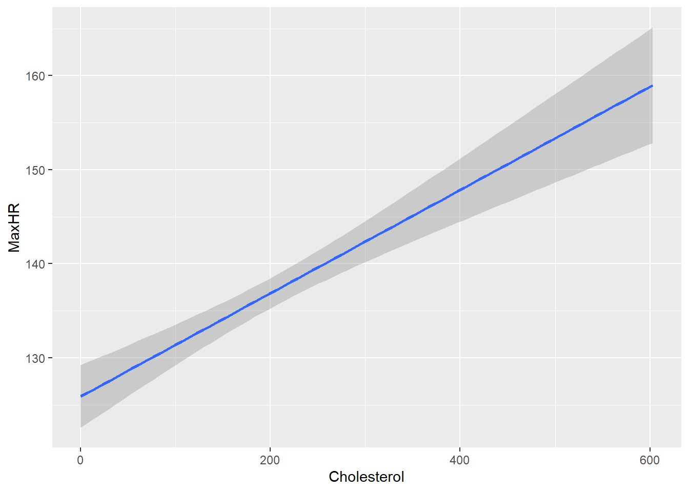

#implemented silencing the warnings based on feedback
library(readr)
library(readxl)
library(dplyr)
library(caret)
library(randomForest)ST558 - Homework 5: Models with caret
Initial Library Read-in
Task 1: Conceptual Questions
- What is the purpose of using cross-validation when fitting a random forest model?
Cross-validation helps make sure that the model obtains similar results for every branch.
- Describe the bagged tree algorithm
Bagged tree algorithm constructs numerous decision trees of the training data by using random sampling with replacement and averages the resulting predictions which reduces the variance.
- What is meant by a general linear model?
It is simply a generalized form of a lineral model that includes both categorical and continuous variables
- When fitting a multiple linear regression model, what does adding an interaction term do? That is, what does it allow the model to do differently as compared to when it is not included in the model?
Adding an ineteraction term provides the information regarding predictors that depend on each other. If y cannot happen without x, adding an interaction term will ensure that wholly additive information does not overtake the data.
- Why do we split our data into a training and test set?
The idea is to fit competing models on the training set of data and get an idea of how well the model will generalize when applied to the test set. It also saves from doing computation over large data sets.
Task 2: Fitting Models
Quick EDA/Data Preparation
#reading in the csv
heart_data <- read_csv("./data/heart.csv")Rows: 918 Columns: 12
── Column specification ────────────────────────────────────────────────────────
Delimiter: ","
chr (5): Sex, ChestPainType, RestingECG, ExerciseAngina, ST_Slope
dbl (7): Age, RestingBP, Cholesterol, FastingBS, MaxHR, Oldpeak, HeartDisease
ℹ Use `spec()` to retrieve the full column specification for this data.
ℹ Specify the column types or set `show_col_types = FALSE` to quiet this message.#checking the format of the data
spec(heart_data)cols(
Age = col_double(),
Sex = col_character(),
ChestPainType = col_character(),
RestingBP = col_double(),
Cholesterol = col_double(),
FastingBS = col_double(),
RestingECG = col_character(),
MaxHR = col_double(),
ExerciseAngina = col_character(),
Oldpeak = col_double(),
ST_Slope = col_character(),
HeartDisease = col_double()
)#changing the data type for the heart disease column
heart_data$HeartDisease <- as.factor(heart_data$HeartDisease)
#dropping the ST_Slope variable
heart_data <- heart_data |>
select(!ST_Slope)
#viewing the corrected data
heart_data# A tibble: 918 × 11
Age Sex ChestPainType RestingBP Cholesterol FastingBS RestingECG MaxHR
<dbl> <chr> <chr> <dbl> <dbl> <dbl> <chr> <dbl>
1 40 M ATA 140 289 0 Normal 172
2 49 F NAP 160 180 0 Normal 156
3 37 M ATA 130 283 0 ST 98
4 48 F ASY 138 214 0 Normal 108
5 54 M NAP 150 195 0 Normal 122
6 39 M NAP 120 339 0 Normal 170
7 45 F ATA 130 237 0 Normal 170
8 54 M ATA 110 208 0 Normal 142
9 37 M ASY 140 207 0 Normal 130
10 48 F ATA 120 284 0 Normal 120
# ℹ 908 more rows
# ℹ 3 more variables: ExerciseAngina <chr>, Oldpeak <dbl>, HeartDisease <fct>Data prep for kNN through adding dummy columns
#creating a list of the variables to be run through the `dummyVars` function
dummy_list <- c("ChestPainType", "RestingECG", "ExerciseAngina")
#creating a temporary data set for the dummy function
heart_dummy <- heart_data |>
select(ChestPainType, RestingECG, ExerciseAngina)
#dummyfying the data
heart_dummy <- dummyVars(" ~ .", data = heart_dummy)
#using predict to create new columns
heart_predict <- as_tibble(data.frame(predict(heart_dummy, newdata = heart_data)))
#adjusting the column type for later use
heart_predict <- heart_predict |>
mutate(across(where(is.double), as.factor))#combining the data into one object and dropping the character variables
heart_data2 <- bind_cols(heart_data, heart_predict)
heart_data2 <- heart_data2 |>
select(!all_of(dummy_list))
heart_data2# A tibble: 918 × 17
Age Sex RestingBP Cholesterol FastingBS MaxHR Oldpeak HeartDisease
<dbl> <chr> <dbl> <dbl> <dbl> <dbl> <dbl> <fct>
1 40 M 140 289 0 172 0 0
2 49 F 160 180 0 156 1 1
3 37 M 130 283 0 98 0 0
4 48 F 138 214 0 108 1.5 1
5 54 M 150 195 0 122 0 0
6 39 M 120 339 0 170 0 0
7 45 F 130 237 0 170 0 0
8 54 M 110 208 0 142 0 0
9 37 M 140 207 0 130 1.5 1
10 48 F 120 284 0 120 0 0
# ℹ 908 more rows
# ℹ 9 more variables: ChestPainTypeASY <fct>, ChestPainTypeATA <fct>,
# ChestPainTypeNAP <fct>, ChestPainTypeTA <fct>, RestingECGLVH <fct>,
# RestingECGNormal <fct>, RestingECGST <fct>, ExerciseAnginaN <fct>,
# ExerciseAnginaY <fct>Splitting the data
#setting up to split the data into two for later use as training and testing
train <- sample(1:nrow(heart_data), size = nrow(heart_data)*0.6)
test <- setdiff(1:nrow(heart_data), train)
#subsetting the data set
heart_train <- heart_data[train, ]
heart_test <- heart_data[test, ]
#repeating with dummy data
dummy_train <- heart_data2[train, ]
dummy_test <- heart_data2[test, ]Quick EDA
#quick count of different variables
heart_data |>
count(HeartDisease, ChestPainType, Sex)# A tibble: 16 × 4
HeartDisease ChestPainType Sex n
<fct> <chr> <chr> <int>
1 0 ASY F 31
2 0 ASY M 73
3 0 ATA F 56
4 0 ATA M 93
5 0 NAP F 47
6 0 NAP M 84
7 0 TA F 9
8 0 TA M 17
9 1 ASY F 39
10 1 ASY M 353
11 1 ATA F 4
12 1 ATA M 20
13 1 NAP F 6
14 1 NAP M 66
15 1 TA F 1
16 1 TA M 19#summarizing the data
summary(heart_data) Age Sex ChestPainType RestingBP
Min. :28.00 Length:918 Length:918 Min. : 0.0
1st Qu.:47.00 Class :character Class :character 1st Qu.:120.0
Median :54.00 Mode :character Mode :character Median :130.0
Mean :53.51 Mean :132.4
3rd Qu.:60.00 3rd Qu.:140.0
Max. :77.00 Max. :200.0
Cholesterol FastingBS RestingECG MaxHR
Min. : 0.0 Min. :0.0000 Length:918 Min. : 60.0
1st Qu.:173.2 1st Qu.:0.0000 Class :character 1st Qu.:120.0
Median :223.0 Median :0.0000 Mode :character Median :138.0
Mean :198.8 Mean :0.2331 Mean :136.8
3rd Qu.:267.0 3rd Qu.:0.0000 3rd Qu.:156.0
Max. :603.0 Max. :1.0000 Max. :202.0
ExerciseAngina Oldpeak HeartDisease
Length:918 Min. :-2.6000 0:410
Class :character 1st Qu.: 0.0000 1:508
Mode :character Median : 0.6000
Mean : 0.8874
3rd Qu.: 1.5000
Max. : 6.2000 #plotting resting heart rate against heart disease
ggplot(data = heart_data, mapping = aes(x = RestingBP, colour = HeartDisease)) +
geom_histogram(binwidth = 0.1)
#plotting resting age against heart diseases
ggplot(heart_data, aes(Age, fill = HeartDisease)) +
geom_bar(position = "dodge")
#plotting resting age against heart max heart rate
ggplot(heart_data, aes(Cholesterol, MaxHR)) +
geom_smooth(method = "lm") `geom_smooth()` using formula = 'y ~ x'
#summarizing based on whether someone has heart disease at a given age
table(heart_data$HeartDisease, heart_data$Age)
28 29 30 31 32 33 34 35 36 37 38 39 40 41 42 43 44 45 46 47 48 49 50 51 52
0 1 3 1 1 3 1 5 7 4 10 5 13 7 18 15 13 13 15 11 8 16 10 11 20 17
1 0 0 0 1 2 1 2 4 2 1 11 2 6 6 3 11 6 3 13 11 15 11 14 15 19
53 54 55 56 57 58 59 60 61 62 63 64 65 66 67 68 69 70 71 72 73 74 75 76 77
0 18 28 17 13 12 14 12 8 5 10 7 7 6 6 3 4 3 1 3 1 0 2 1 1 0
1 15 23 24 25 26 28 23 24 26 25 23 15 15 7 12 6 10 6 2 3 1 5 2 1 2kNN
#setting up the grid to be used later in `tuneGrid`
k <- expand.grid(k = 1:40)
#setting up the
trainctrl <- trainControl(method = "repeatedcv", number = 10, repeats = 3)
set.seed(478)
#training the kNN model
knn_fit <- train(ChestPainTypeASY ~.,
data = dummy_train,
method = "knn",
preProcess = c("center", "scale"),
trControl=trainctrl,
tuneGrid = k,
tuneLength = 10)#running the fit
knn_fitk-Nearest Neighbors
550 samples
16 predictor
2 classes: '0', '1'
Pre-processing: centered (16), scaled (16)
Resampling: Cross-Validated (10 fold, repeated 3 times)
Summary of sample sizes: 495, 495, 495, 495, 495, 495, ...
Resampling results across tuning parameters:
k Accuracy Kappa
1 0.9690909 0.9373987
2 0.9593939 0.9177115
3 0.9630303 0.9250608
4 0.9563636 0.9116188
5 0.9587879 0.9164590
6 0.9496970 0.8978916
7 0.9521212 0.9028786
8 0.9509091 0.9004268
9 0.9406061 0.8794133
10 0.9418182 0.8817346
11 0.9387879 0.8755516
12 0.9363636 0.8705382
13 0.9393939 0.8766772
14 0.9375758 0.8729163
15 0.9406061 0.8790900
16 0.9400000 0.8778480
17 0.9357576 0.8689135
18 0.9290909 0.8551238
19 0.9296970 0.8564098
20 0.9296970 0.8561753
21 0.9242424 0.8449376
22 0.9236364 0.8437111
23 0.9230303 0.8424602
24 0.9218182 0.8398994
25 0.9212121 0.8386398
26 0.9218182 0.8399325
27 0.9218182 0.8400750
28 0.9200000 0.8363373
29 0.9175758 0.8312904
30 0.9169697 0.8301387
31 0.9175758 0.8313152
32 0.9133333 0.8226217
33 0.9139394 0.8238214
34 0.9084848 0.8125163
35 0.9109091 0.8174794
36 0.9066667 0.8088102
37 0.9096970 0.8150173
38 0.9084848 0.8127328
39 0.9054545 0.8063416
40 0.9054545 0.8063409
Accuracy was used to select the optimal model using the largest value.
The final value used for the model was k = 1.#running the model using test data
knn_pred <- predict(knn_fit, newdata = dummy_test)
#checking the accuracy of the sample results
knn_pred2 <- postResample(predict(knn_fit, newdata = dummy_test), dummy_test$ChestPainTypeASY)#checking how well the chosen model does on the test data set
confusionMatrix(knn_pred, dummy_test$ChestPainTypeASY)Confusion Matrix and Statistics
Reference
Prediction 0 1
0 163 0
1 9 196
Accuracy : 0.9755
95% CI : (0.9541, 0.9888)
No Information Rate : 0.5326
P-Value [Acc > NIR] : < 2.2e-16
Kappa : 0.9507
Mcnemar's Test P-Value : 0.007661
Sensitivity : 0.9477
Specificity : 1.0000
Pos Pred Value : 1.0000
Neg Pred Value : 0.9561
Prevalence : 0.4674
Detection Rate : 0.4429
Detection Prevalence : 0.4429
Balanced Accuracy : 0.9738
'Positive' Class : 0
Logistic Regression
Setting up logistic regression models
#model 1 - using just the heart disease and chest pain type predictors
glm_mod1 <- train(HeartDisease ~ ChestPainType,
data = heart_train,
method = "glm",
family = binomial,
preProcess = c("center", "scale"),
trControl = trainctrl)
#model 2 - using just the heart disease and whether pain while exercising exists
glm_mod2 <- train(HeartDisease ~ ExerciseAngina,
data = heart_train,
method = "glm",
family = binomial,
preProcess = c("center", "scale"),
trControl = trainctrl)
#model 3 - combines model of previous the variables
glm_mod3 <- train(HeartDisease ~ ChestPainType + ExerciseAngina,
data = heart_train,
method = "glm",
family = binomial,
preProcess = c("center", "scale"),
trControl = trainctrl)Results
#showing results in a combined set ast shown in the notes
rbind(c("Mod1", glm_mod1$results[c("Accuracy", "Kappa")]),
c("Mod2", glm_mod2$results[c("Accuracy", "Kappa")]),
c("Mod3", glm_mod3$results[c("Accuracy", "Kappa")])
) Accuracy Kappa
[1,] "Mod1" 0.7417372 0.471777
[2,] "Mod2" 0.712601 0.4419877
[3,] "Mod3" 0.7837173 0.5515175#model 3 is the most accurate one
summary(glm_mod3)
Call:
NULL
Coefficients:
Estimate Std. Error z value Pr(>|z|)
(Intercept) 0.43982 0.11550 3.808 0.00014 ***
ChestPainTypeATA -1.05662 0.13228 -7.987 1.38e-15 ***
ChestPainTypeNAP -0.62577 0.10474 -5.975 2.31e-09 ***
ChestPainTypeTA -0.23101 0.09438 -2.448 0.01437 *
ExerciseAnginaY 0.85994 0.12009 7.161 8.01e-13 ***
---
Signif. codes: 0 '***' 0.001 '**' 0.01 '*' 0.05 '.' 0.1 ' ' 1
(Dispersion parameter for binomial family taken to be 1)
Null deviance: 749.58 on 549 degrees of freedom
Residual deviance: 522.94 on 545 degrees of freedom
AIC: 532.94
Number of Fisher Scoring iterations: 4Running model 3 on test set
#running the model using test data
glm_pred <- predict(glm_mod3, newdata = heart_test)
#checking the accuracy of the sample results
glm_pred2 <- postResample(predict(glm_mod3, newdata = heart_test), heart_test$HeartDisease)
glm_pred2 Accuracy Kappa
0.7826087 0.5624127 #checking how well the chosen model does on the test data set
confusionMatrix(glm_pred, heart_test$HeartDisease)Confusion Matrix and Statistics
Reference
Prediction 0 1
0 125 28
1 52 163
Accuracy : 0.7826
95% CI : (0.7369, 0.8237)
No Information Rate : 0.519
P-Value [Acc > NIR] : < 2e-16
Kappa : 0.5624
Mcnemar's Test P-Value : 0.01013
Sensitivity : 0.7062
Specificity : 0.8534
Pos Pred Value : 0.8170
Neg Pred Value : 0.7581
Prevalence : 0.4810
Detection Rate : 0.3397
Detection Prevalence : 0.4158
Balanced Accuracy : 0.7798
'Positive' Class : 0
Tree Models
Classification tree model
#setting up the cp sequence
cp <- expand.grid(cp = seq(0, 0.1, 0.001))
#building the model with classification tree model and training it on the train data set
class_tree <- train(HeartDisease ~ Age + Sex + MaxHR + ExerciseAngina,
data = heart_train,
method = "rpart",
preProcess = c("center", "scale"),
tuneGrid = cp,
trControl = trainctrl)
#running the model
class_treeCART
550 samples
4 predictor
2 classes: '0', '1'
Pre-processing: centered (4), scaled (4)
Resampling: Cross-Validated (10 fold, repeated 3 times)
Summary of sample sizes: 496, 494, 495, 494, 495, 494, ...
Resampling results across tuning parameters:
cp Accuracy Kappa
0.000 0.7387670 0.4633097
0.001 0.7405527 0.4672866
0.002 0.7453796 0.4789138
0.003 0.7477822 0.4847650
0.004 0.7526531 0.4949525
0.005 0.7556614 0.4997801
0.006 0.7580860 0.5051685
0.007 0.7617340 0.5118620
0.008 0.7647759 0.5159196
0.009 0.7647759 0.5159196
0.010 0.7684355 0.5221008
0.011 0.7708165 0.5266552
0.012 0.7660546 0.5175579
0.013 0.7648641 0.5154893
0.014 0.7648641 0.5154893
0.015 0.7648862 0.5147177
0.016 0.7648862 0.5147177
0.017 0.7612823 0.5081705
0.018 0.7612823 0.5081705
0.019 0.7612823 0.5081705
0.020 0.7545819 0.4969569
0.021 0.7545819 0.4969569
0.022 0.7533698 0.4962759
0.023 0.7533698 0.4962759
0.024 0.7509231 0.4925682
0.025 0.7509231 0.4925682
0.026 0.7509231 0.4925682
0.027 0.7515292 0.4940604
0.028 0.7515292 0.4940604
0.029 0.7491049 0.4904692
0.030 0.7491049 0.4904692
0.031 0.7491049 0.4904692
0.032 0.7508907 0.4944850
0.033 0.7508907 0.4944850
0.034 0.7454361 0.4822213
0.035 0.7454361 0.4822213
0.036 0.7454361 0.4822213
0.037 0.7454361 0.4822213
0.038 0.7454361 0.4822213
0.039 0.7442240 0.4797429
0.040 0.7442240 0.4797429
0.041 0.7442240 0.4797429
0.042 0.7442240 0.4797429
0.043 0.7442240 0.4797429
0.044 0.7424383 0.4755560
0.045 0.7424383 0.4755560
0.046 0.7424383 0.4755560
0.047 0.7424383 0.4755560
0.048 0.7424383 0.4755560
0.049 0.7424383 0.4755560
0.050 0.7424383 0.4755560
0.051 0.7424383 0.4755560
0.052 0.7424383 0.4755560
0.053 0.7424383 0.4755560
0.054 0.7424383 0.4755560
0.055 0.7424383 0.4755560
0.056 0.7424383 0.4755560
0.057 0.7424383 0.4755560
0.058 0.7387346 0.4696993
0.059 0.7387346 0.4696993
0.060 0.7387346 0.4696993
0.061 0.7387346 0.4696993
0.062 0.7387346 0.4696993
0.063 0.7363536 0.4643210
0.064 0.7363536 0.4643210
0.065 0.7321112 0.4568884
0.066 0.7321112 0.4568884
0.067 0.7321112 0.4568884
0.068 0.7321112 0.4568884
0.069 0.7321112 0.4568884
0.070 0.7230724 0.4408945
0.071 0.7230724 0.4408945
0.072 0.7182239 0.4322518
0.073 0.7182239 0.4322518
0.074 0.7163721 0.4294375
0.075 0.7163721 0.4294375
0.076 0.7163721 0.4294375
0.077 0.7091202 0.4187695
0.078 0.7091202 0.4187695
0.079 0.7091202 0.4187695
0.080 0.7091202 0.4187695
0.081 0.7091202 0.4226954
0.082 0.7091202 0.4226954
0.083 0.7091202 0.4226954
0.084 0.7091202 0.4226954
0.085 0.7091202 0.4226954
0.086 0.7091202 0.4226954
0.087 0.7091202 0.4226954
0.088 0.7091202 0.4226954
0.089 0.7091202 0.4226954
0.090 0.7091202 0.4226954
0.091 0.7085033 0.4262460
0.092 0.7085033 0.4262460
0.093 0.7085033 0.4262460
0.094 0.7085033 0.4262460
0.095 0.7085033 0.4262460
0.096 0.7085033 0.4305889
0.097 0.7085033 0.4305889
0.098 0.7085033 0.4305889
0.099 0.7085033 0.4305889
0.100 0.7091093 0.4335124
Accuracy was used to select the optimal model using the largest value.
The final value used for the model was cp = 0.011.Random forest
#setting up mtry sequence with 11 as the number of predictors
mtry <- expand.grid(mtry = seq(1:11))
#building the model with random forest model and training it on the train data set
rand_tree <- train(HeartDisease ~ .,
data = heart_train,
method = "rf",
preProcess = c("center", "scale"),
tuneGrid = mtry,
trControl = trainctrl)
#running the model
rand_treeRandom Forest
550 samples
10 predictor
2 classes: '0', '1'
Pre-processing: centered (13), scaled (13)
Resampling: Cross-Validated (10 fold, repeated 3 times)
Summary of sample sizes: 494, 494, 495, 496, 495, 495, ...
Resampling results across tuning parameters:
mtry Accuracy Kappa
1 0.8107724 0.6072879
2 0.8138272 0.6177302
3 0.8083498 0.6066172
4 0.8059584 0.6007204
5 0.8047463 0.5978683
6 0.8034901 0.5953669
7 0.8023220 0.5924672
8 0.7980676 0.5841103
9 0.7932403 0.5744523
10 0.7883690 0.5648022
11 0.7883361 0.5649892
Accuracy was used to select the optimal model using the largest value.
The final value used for the model was mtry = 2.Boosted tree
#setting up a grid with defined specifications
mtryGrid <- expand.grid(interaction.depth = c(1, 2, 3),
#not sure how this was meant to be interpreted so kept it as whole numbers rather than a sequence
n.trees = c(25, 50, 100, 200),
n.minobsinnode = 10,
shrinkage = 0.1)
#building the model with boosted tree model and training it on the train data set
boost_tree <- train(HeartDisease ~ .,
data = heart_train,
method = "gbm",
preProcess = c("center", "scale"),
tuneGrid = mtryGrid,
trControl = trainctrl,
verbose = FALSE)
#running the model
boost_treeStochastic Gradient Boosting
550 samples
10 predictor
2 classes: '0', '1'
Pre-processing: centered (13), scaled (13)
Resampling: Cross-Validated (10 fold, repeated 3 times)
Summary of sample sizes: 496, 495, 495, 495, 496, 494, ...
Resampling results across tuning parameters:
interaction.depth n.trees Accuracy Kappa
1 25 0.7995118 0.5833913
1 50 0.8158774 0.6199497
1 100 0.8140148 0.6174577
1 200 0.8121421 0.6156278
2 25 0.8067300 0.6011704
2 50 0.8085939 0.6051976
2 100 0.8128591 0.6166596
2 200 0.8122539 0.6144338
3 25 0.8049014 0.5973661
3 50 0.8085939 0.6073318
3 100 0.8110963 0.6120350
3 200 0.8049816 0.5989950
Tuning parameter 'shrinkage' was held constant at a value of 0.1
Tuning parameter 'n.minobsinnode' was held constant at a value of 10
Accuracy was used to select the optimal model using the largest value.
The final values used for the model were n.trees = 50, interaction.depth =
1, shrinkage = 0.1 and n.minobsinnode = 10.Applying to test data
#running the built models over testing data
class_pred <- predict(class_tree, newdata = heart_test)
rand_pred <- predict(rand_tree, newdata = heart_test)
boost_pred <- predict(boost_tree, newdata = heart_test)#running the test data with confusion matrix
confusionMatrix(class_pred, heart_test$HeartDisease)Confusion Matrix and Statistics
Reference
Prediction 0 1
0 120 29
1 57 162
Accuracy : 0.7663
95% CI : (0.7197, 0.8086)
No Information Rate : 0.519
P-Value [Acc > NIR] : < 2.2e-16
Kappa : 0.5292
Mcnemar's Test P-Value : 0.003597
Sensitivity : 0.6780
Specificity : 0.8482
Pos Pred Value : 0.8054
Neg Pred Value : 0.7397
Prevalence : 0.4810
Detection Rate : 0.3261
Detection Prevalence : 0.4049
Balanced Accuracy : 0.7631
'Positive' Class : 0
#running the test data with confusion matrix
confusionMatrix(rand_pred, heart_test$HeartDisease)Confusion Matrix and Statistics
Reference
Prediction 0 1
0 139 17
1 38 174
Accuracy : 0.8505
95% CI : (0.8099, 0.8854)
No Information Rate : 0.519
P-Value [Acc > NIR] : < 2.2e-16
Kappa : 0.6993
Mcnemar's Test P-Value : 0.007001
Sensitivity : 0.7853
Specificity : 0.9110
Pos Pred Value : 0.8910
Neg Pred Value : 0.8208
Prevalence : 0.4810
Detection Rate : 0.3777
Detection Prevalence : 0.4239
Balanced Accuracy : 0.8482
'Positive' Class : 0
#running the test data with confusion matrix
confusionMatrix(boost_pred, heart_test$HeartDisease)Confusion Matrix and Statistics
Reference
Prediction 0 1
0 134 18
1 43 173
Accuracy : 0.8342
95% CI : (0.7922, 0.8708)
No Information Rate : 0.519
P-Value [Acc > NIR] : < 2e-16
Kappa : 0.6663
Mcnemar's Test P-Value : 0.00212
Sensitivity : 0.7571
Specificity : 0.9058
Pos Pred Value : 0.8816
Neg Pred Value : 0.8009
Prevalence : 0.4810
Detection Rate : 0.3641
Detection Prevalence : 0.4130
Balanced Accuracy : 0.8314
'Positive' Class : 0
Wrap up
When comparing the results, the accuracy of the kNN test data is hands down the best out of all the other methods.